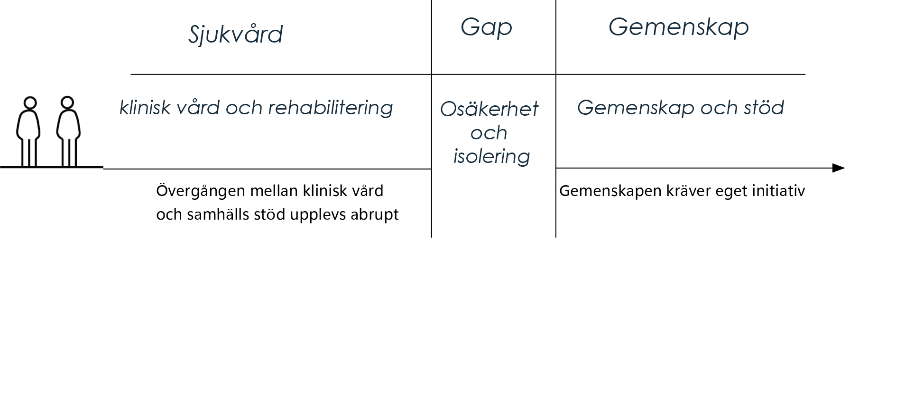
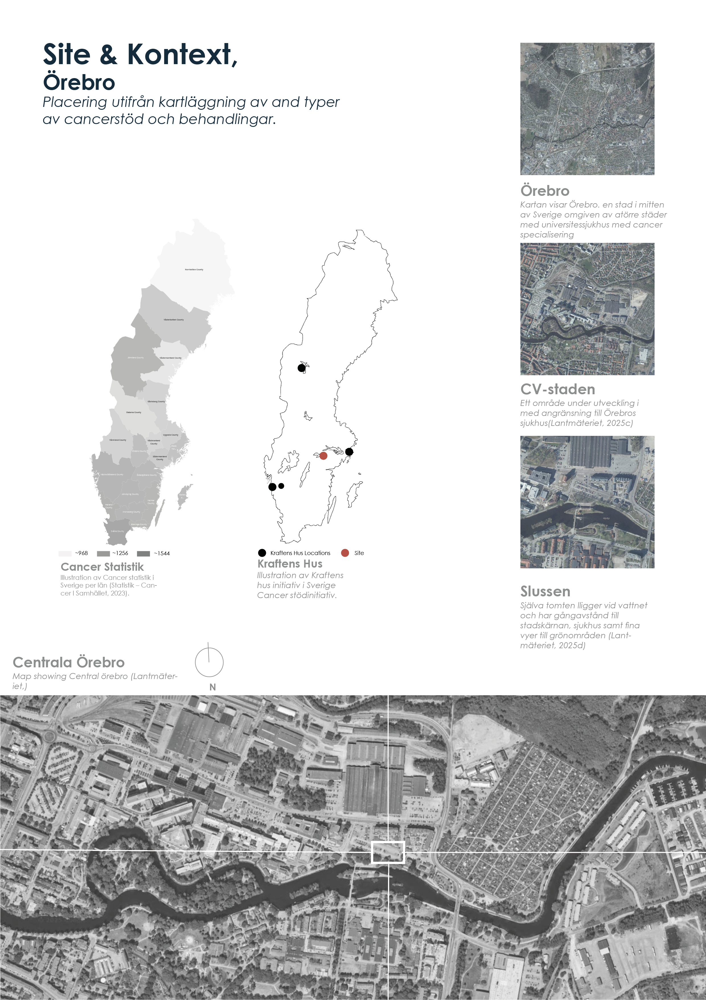
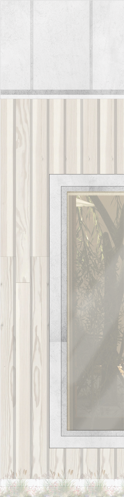
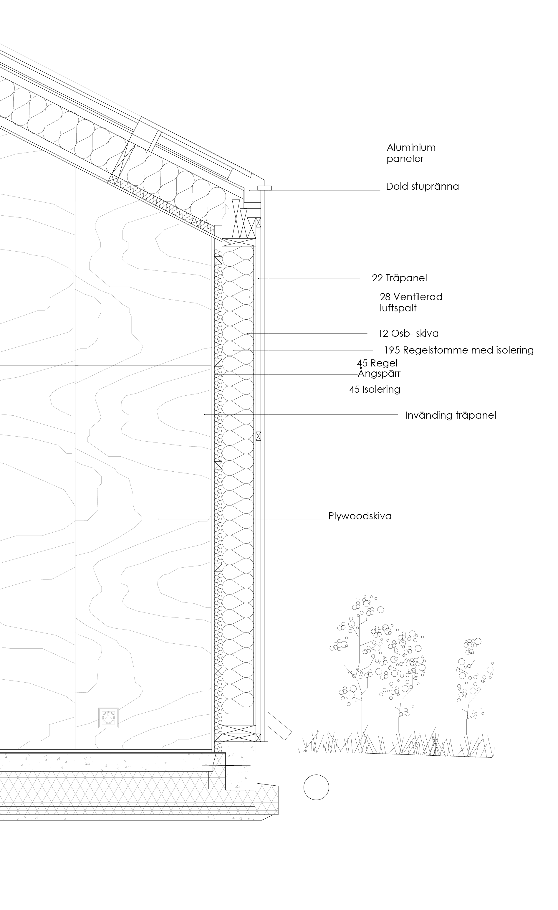
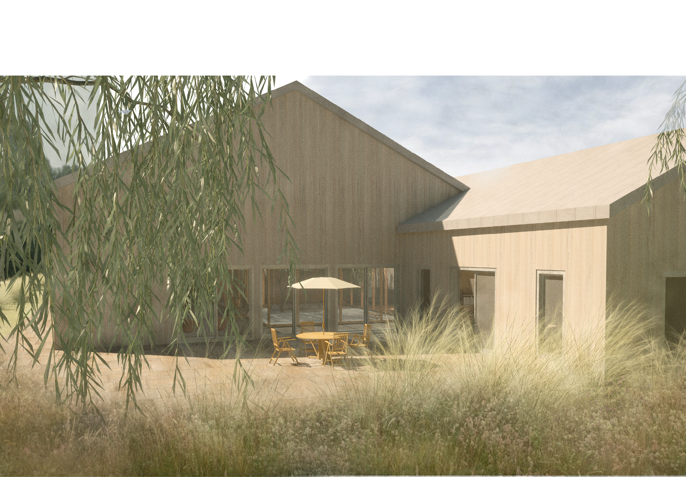
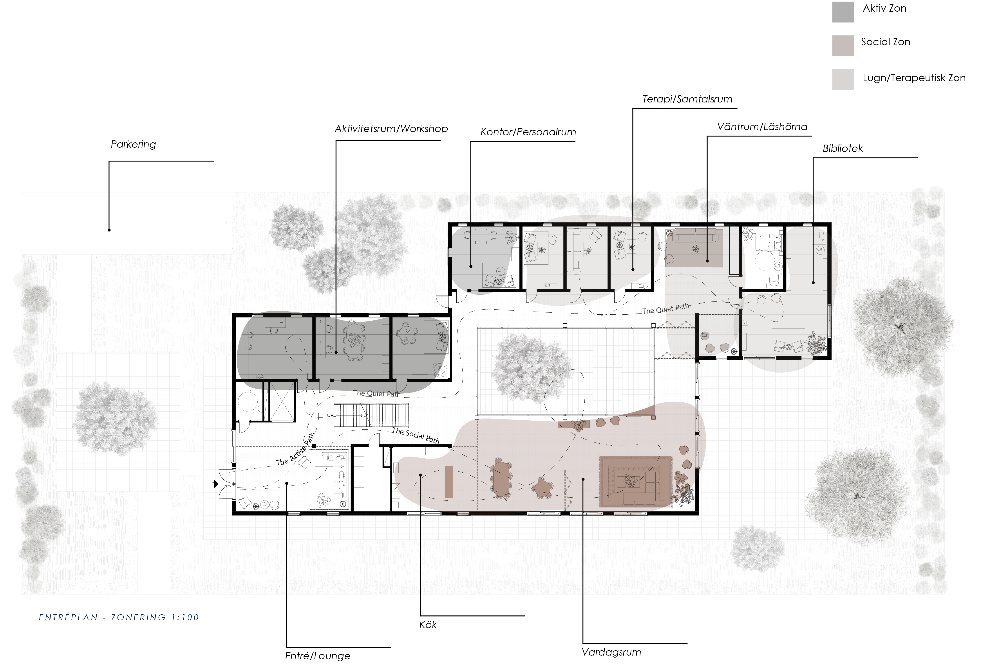
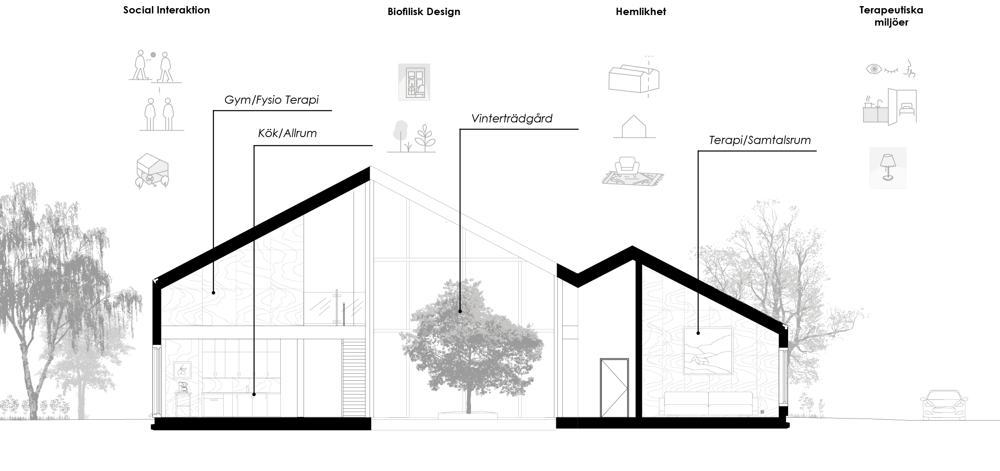
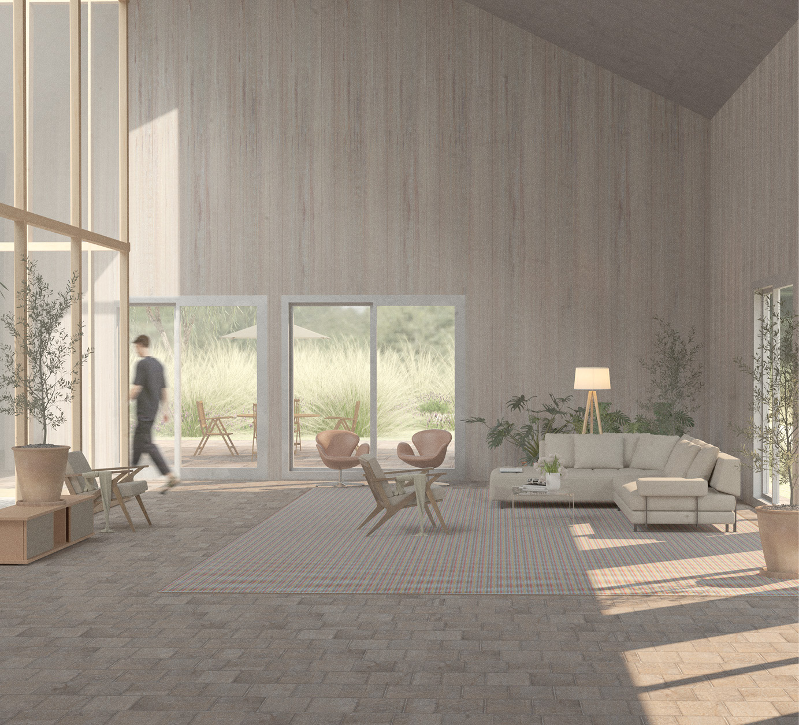

En fragmenterad resa
Övergången mellan klinisk vård och samhällsstöd upplevs abrupt. Gemenskapen kräver eget initiativ, och cancerberörda hamnar ofta i ett gap mellan sjukvård och gemenskap , präglat av osäkerhet och isolering.

Plats & Kontext , Örebro
Byggnaden är placerad vid vattnet i CV-staden, ett område under utveckling med angränsning till Örebros sjukhus. Tomten har gångavstånd till stadskärnan och fina vyer mot grönområden.

Stegvis volymutveckling
Processen utgår från platsens skala, rörelsemönster och behovet av skyddade utomhusmiljöer. Sadeltaksstrukturen ger ett nedskalat intryck som påminner om den familjära villatypologin , en medveten kontrast till övriga sjukhusbebyggelser.

Ett nordiskt perspektiv
Byggnaden tar avstamp i den nordiska träbyggnadstraditionen. Trä används som bärande och rumsskapande material och bidrar till en varm och hemtrevlig atmosfär , en medveten kontrast till den kliniska karaktär som ofta präglar vårdmiljöer.



Planlösning & Zonering
Planlösningen separerar aktiva, sociala och terapeutiska zoner. En skyddad vinterträdgård fungerar som övergångszon mellan byggnadens olika delar. Den sociala och publika delen vänder sig mot vattnet, medan den lugnare terapidelen är skyddad.




En plats för läkande
En noggrant placerad, naturintegrerad och socialt avvägd byggnad kan fungera som en avgörande tredje plats för läkande. Läkande är sällan en individuell process , den sker ofta i relation till andra och kan ta sin början i något så enkelt som modet att kliva över en tröskel.